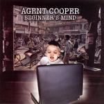

| Artist: | Agent Cooper |
| Title: | Beginners Mind |
| Label: | Progrock Records (before that on Zero Sum Records) |
| Length(s): | 46 minutes |
| Year(s) of release: | 2005 |
| Month of review: | [02/2006] |
| 1) | East Indian Sun | 5.34 |
| 2) | Shallow Disease | 4.00 |
| 3) | ...In The Bottle | 3.53 |
| 4) | Taipei | 3.51 |
| 5) | Timing Crucial | 4.57 |
| 6) | I Never Remember | 3.47 |
| 7) | The Heat | 4.45 |
| 8) | She Screams | 4.10 |
| 9) | Struggle Like I Do | 6.29 |
| 10) | You Know | 4.51 |
Shallow Disease continues in the same vein, a combination of hard guitarwork and catchy vocal melodies, and although the drums can be pretty straightforward bashing away, the songs are not so simple, and include quite a bit of melodic variation.
The same holds for the energetic rock of ...In The Bottle. Here the organ adds a bit of spice. Still, although the songs are strong, I do get the impression that I liked the previous album a bit more, sounding more ehm refined and delicate.
Taipei combines a plodding rock with a melodic chorus that is instantly memorable without being shallow. It seems to me that band uses more of a blues underground this time around.
Timing Crucial features a Fender Rhodes for more of a seventies feel, and rhythmically we get more variation. Again, we get an extremely sunny singalong chorus, with some prominent bass work. Sometimes I get a bit of a King's X feel, but with more variation in the melodies, and the melodies themselves are catchier/better too.
Halfway down the road, we encounter I Never Remember. Again, the organ sound pitted against a rock guitar. The symphonic side of the band is revealed in the middle section where the organ takes the lead. Does The Heat bring anything really new? Nope, all the usual suspects, although the pace is a bit higher, and there is a certain looseness/jamminess in place.
Time for some acoustic guitar, washes of it in fact. That is until the vocals of She Screams set in. This is a rather waltzy piece, lined by squeaky keyboards. The chorus is certainly very pop like, and the keyboards add a very specific, playful character. This is a good song to have here, for the variation. The piano work has a bit of a Tony Banks feel. The vocalist shows his qualities at the end of this excellent song.
In the opening of Struggle Like I Do, we even get a bit of mellotron, before the plodding powerchords set in. The melody lines can be somewhat Arabic. A short classical interlude with flute and acoustic guitar, followed by a power up extends this song beyond the length. This is indeed symphonic.
You Know closes the album, opening with nylon string acoustic guitars and soft vocals. It stays quiet on this introspective and tragic lovesong. The piano is played in a somewhat classical style.